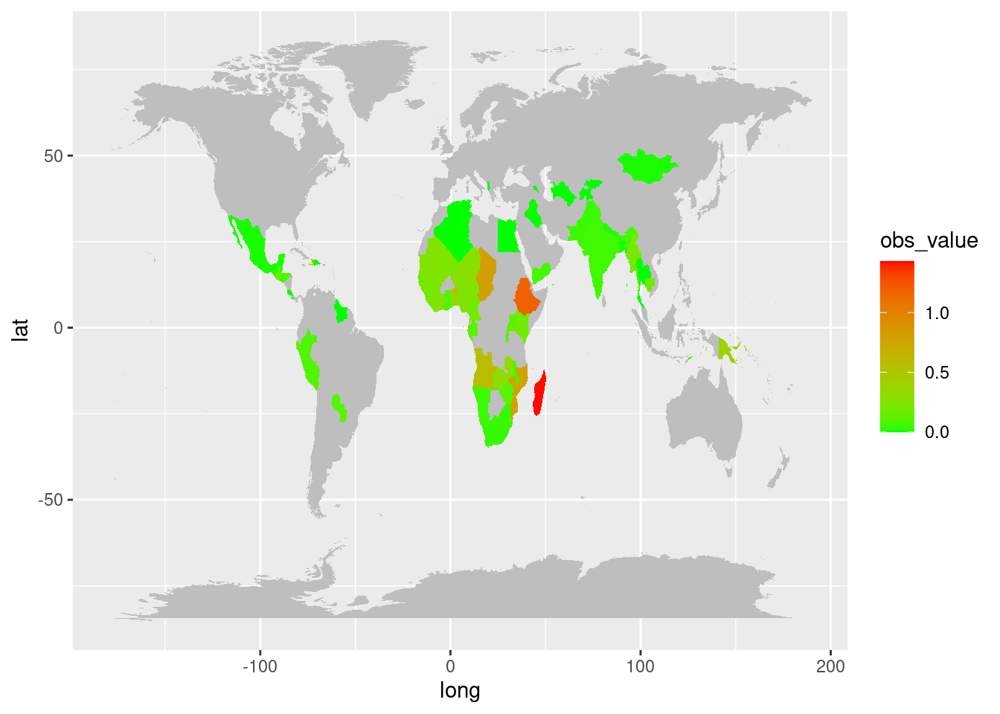

UNICEF Deprivation Insights
Understanding the Percentage of Children Suffering Exactly Five Deprivations Across the Globe from 2011 to 2018
Introduction
Welcome to the UNICEF Deprivation Dashboard. This interactive visualization aims to shed light on the critical issue of child deprivation by examining the percentage of children suffering from exactly five deprivations, as identified by UNICEF. Deprivation among children, whether it be lack of access to education, healthcare, clean water, or adequate nutrition, remains a pressing global concern. Through this dashboard, we aim to highlight the prevalence of children experiencing multiple deprivations, offering insights into the areas where intervention and support are most urgently needed. It also provides insight into the gender disparity in the children and how unevenly theyare spread across the different regions.
Insights into the Topic
The data shows that the vast number of children, especially in African nations, are grappling with a multitude of deprivations. The weight of this hardship falls particularly heavy on Madagascar, Ethiopia, and Chad, with other African countries following suit. This geographical skew paints a clear picture – a significant escalation of efforts is crucial to prevent even more children from succumbing to these deprivations within Africa.
The Gender Concentration
Further examination strengthens this troubling trend. When dissecting the data by gender, a stark disparity emerges. Boys and girls across the African subcontinent are shouldering the burden of these deprivations at disproportionate rates. While the Indian subcontinent also grapples with a concerning number of affected children, Africa stands out as a region in dire need of intervention.
This Scatter Plot shows the relationship between the Percentage of Children Suffering Exactly Five Deprivations as observed throughout the years across different countries in the world
The Gender Proportions
The true story unfolds when we shift our focus from raw numbers to proportions. A deeper analysis reveals a surprising detail – even within the heavily impacted African region, a gender gap exists. While the overall number of affected children might be higher in Africa, girls are bearing the brunt of these five deprivations at a higher rate compared to boys. The data suggests a concerning ratio of 54:46, highlighting the need for targeted interventions that address the specific vulnerabilities faced by each gender.
This bar chart shows the difference in the Percentage of Children Suffering Exactly Five Deprivations differentiated by Gender
Conclusion and Recommendations
In Conclusion, It can be Deduced that he Most amount of Children Suffering from Exactly Five Deprivations are Staggering across the World. It is evident that most of the Children Hail from The African Subcontinent with the Indian Subcontinent as a close Second. There is an Observable Disproportion which shows that Female Children are more in Numbers as Compared to their Male counterparts that Suffer from these Deprivations with a ratio of 54:46. This shows that more improvements have to be made by the African Government to ensure that the Children are well attended to so that they do not fall to such severe Deprivations with a strong emphasis for the Empowerment of the Female Population so that they can lead healthy and sustainable futures.